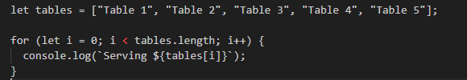
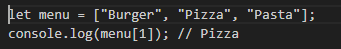
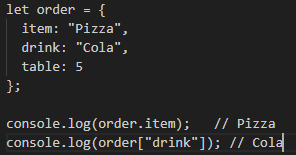

JavaScript and its relationship to HTML and CSS
Starting out in web development can feel like being handed a bunch of mysterious tools with no instructions. HTML, CSS, JavaScript they might as well be spells from a wizard’s book. But once I started to see how they all fit together, things began to make sense
JavaScript HTML & CSS are like a restaurant Imagine a restaurant:HTML is the structure of the restaurant — the walls, tables, chairs, menu boards. It’s what you can see and touch.
CSS is the interior design and style — the colors on the walls, the lighting, the plating of the food. It makes everything look appealing.
JavaScript is the staff and kitchen — the waiters, chefs, and behind-the-scenes action that makes the restaurant actually function. It handles interactions
Control Flow & Loops Is Like Taking Orders
Control flow is the order in which actions happen. In a restaurant, the process for taking an order goes something like:
- Take their order
- Send the order to the kitchen
- Serve the food
- Give the bill
- Thank the customer
Thats control flow. One step after another.
Now lets say 5 tables need to be served. Instead of repeating the same steps for every table manually, we use a loop:
Arrays
Your menu is like an array it is a list of items you offer these differ from Objects where objects are unordered collections of data
this is an Array
this is an object
